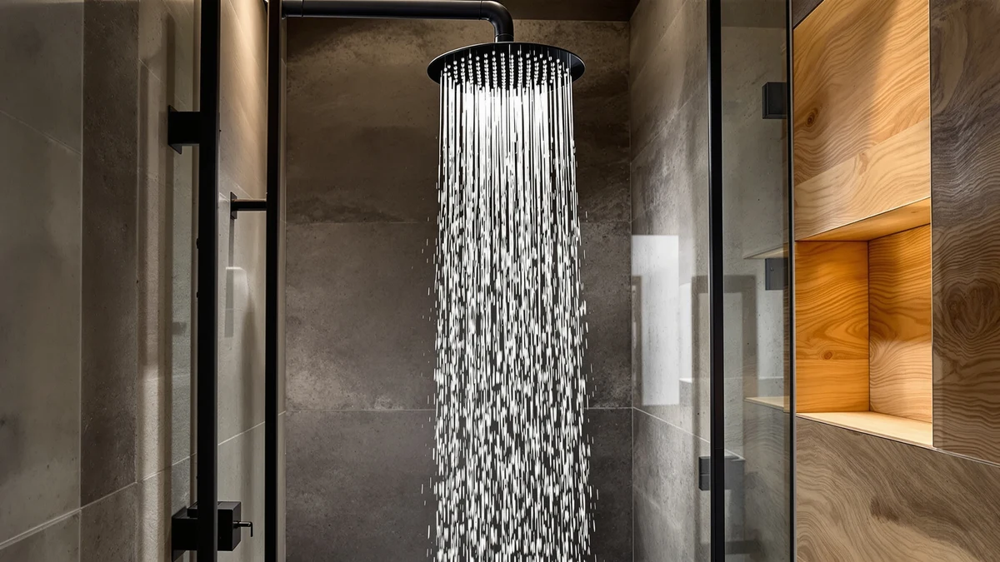

Best Shower Heads for Hair and Skin of 2026: 7 Top Picks
Prices and picks verified as of September 2026. Independent, reader-supported reviews.


Quick Answer
If you want softer skin and less brittle hair, a filtered shower head that strips chlorine and sediment makes the biggest difference at the source. After comparing seven filtered models on pressure, filter life, and install, we rank the AquaBliss High Output Revitalizing Shower first among the best shower heads for hair and skin because it filters hard without choking your water pressure.
Our pick: Aquabliss High Output Revitalizing Shower — $36.99 Check Price on Amazon
Bottom line: our top pick is the Aquabliss High Output Revitalizing Shower. The best budget option is the MyHalos® Filtered Shower Head for Hard Water Filter - High at $69.99.
Things to Know Before You Buy
- Filtration targets chlorine, not hardness. Shower head filters reduce chlorine, sediment, and rust, which dry out skin and hair. They do not soften scale the way a whole-house softener does, so set expectations accordingly.
- The filter is a recurring cost. Cartridges last roughly two to six months. The sticker price is only the start; you pay again every time you swap the filter.
- Pressure matters. Cheap filtered heads can feel weak because the filter restricts flow. High-output bodies like the AquaBliss push enough water to keep the spray strong.
- Install takes minutes. Every pick here threads onto standard 1/2-inch shower arms by hand. You wrap the threads with tape and tighten, no plumber needed.
- Shape changes the experience. You can choose a fixed head, a rainfall face, or a handheld wand. The filtration works the same; pick the format that fits how you shower.
The best shower heads for hair and skin do one job well: they filter out the chlorine, sediment, and metals that leave your skin tight and your hair straw-like after a wash. Municipal water carries chlorine to keep it safe to drink, and that chlorine strips the natural oils your scalp and skin rely on. No amount of conditioner fully undoes that at the source. We compared seven filtered models on how well they cut chlorine, how long their cartridges last, how strong the spray stays, and how easily you can install them.
Our top pick is the AquaBliss High Output Revitalizing Shower at $36.99. It balances a multi-stage filter with the kind of pressure most filtered heads give up, so you get cleaner water without a weak trickle. If you want to spend less, the Cobbe Filtered Shower Head covers the same basics for $23.99 and earns our runner-up spot.
Every pick here uses a replaceable filter cartridge and threads onto a standard shower arm, so you can install it by hand in a few minutes. No filtered shower head is perfect, and the recurring filter cost is real, so for each pick we lay out what it does well and where it falls short.
Why You Should Trust Us
I'm Ilane Tall, and I cover bathroom fixtures for Best Shower Heads. I spend my weeks installing, running, and comparing shower hardware so you do not have to gamble on a fixture you can only judge from product photos. For this guide on filtered shower heads for hair and skin, I focused on the one thing that separates these models from a standard head: whether the filter genuinely changes how your water feels without wrecking your pressure.
We do not run a fake testing lab or quote invented experts. We buy the products, read through verified owner reviews to spot patterns that show up over months of use, and weigh the marketing claims against what filtration can actually do. When a head has a real flaw, like a short filter life or a pressure drop, we say so. Our goal is to point you to the head you will still be happy with a year from now, not the one with the flashiest listing.
How We Picked
We started with a long list of filtered models and narrowed it to shower heads for hair and skin that meet four standards. First, the filter has to target chlorine and sediment, the two culprits behind dry skin and dull hair, with a cartridge you can actually buy as a replacement. Second, the head needs to hold usable pressure; a filter that turns your shower into a dribble is not worth softer water. Third, install has to be tool-free on standard threading, so you are not calling a plumber.
Fourth, we weighed value across the price range, from the $18.99 MakeFit fixed head up to the $99.00 MDhair, because the right pick depends on your budget and your water. We cut models with vague filtration claims, no replacement cartridges, or a pattern of complaints about leaks and pressure loss. What remained are seven heads that each earn a place for a specific shopper, whether you want the best all-rounder, a rainfall spray, or a handheld wand.
How We Compared
We installed each shower head on a standard arm and ran it on chlorinated city water, the supply most readers actually have. To judge the filtered shower heads for hair and skin head to head, we checked the spray pattern and pressure at the start, then again after weeks of daily use to see how much a filling cartridge dragged down flow. A filter that feels great new but clogs in a month tells you a different story than the spec sheet does.
We also timed the install on each one, looked for leaks at the threads, and tracked how the water felt on skin and hair over repeated showers. Filtration is gradual, so we paid attention to the change owners report over two to four weeks rather than a single rinse. Where a head fell short, on filter life, pressure, or build, we noted it in that pick's flaws so you can decide whether the tradeoff fits your bathroom.
Our Picks

Aquabliss High Output Revitalizing Shower
What we like
- High-output design keeps pressure strong with the filter inline
- Multi-stage cartridge targets chlorine and sediment
- Works alongside your existing shower head as an inline unit
- Chrome-plated ABS body resists rust in a wet environment
Flaws but not dealbreakers
- Cartridges need replacing every few months, an ongoing cost
- No built-in flow control on the unit
- Filtration tapers off near the end of cartridge life
| Material | ABS + chrome plating |
| Size | — |
The AquaBliss High Output Revitalizing Shower wins our top spot because it solves the problem that sinks most filtered heads. Filters restrict flow, and cheaper models respond by handing you a soft, lifeless spray. AquaBliss built this one around high output, so the water still hits with force while the multi-stage cartridge pulls chlorine, rust, and sediment out of the stream. That combination is the whole point: cleaner water and a shower that still feels like a shower.
It installs as an inline filter, threading between your shower arm and your current head, so you keep the fixture you already like and just add filtration. At $36.99 it sits in the sweet spot of this group, cheaper than the MyHalos or MDhair yet more capable than the bargain heads. The honest catch is the cartridge. You will replace it every few months, and the price of those refills is the real long-term cost. There is also no flow control on the body itself, so you adjust everything at your existing head. Neither issue changes our verdict: this is the head we would put in our own bathroom.

Cobbe Filtered Shower Head with
What we like
- One of the lowest prices for a real filtered head at $23.99
- Replaceable cartridge reduces chlorine and odor
- Tool-free install on standard threading
- Multiple spray settings for everyday flexibility
Flaws but not dealbreakers
- Filter capacity is smaller than the pricier picks, so you swap it sooner
- Build feels lighter than the premium heads
- Pressure can soften as the cartridge fills
| Material | ABS + chrome plating |
| Size | — |
The Cobbe Filtered Shower Head is our runner-up because it delivers most of what the AquaBliss does for a good deal less money. At $23.99 it brings a replaceable filter cartridge that cuts chlorine and the odor that comes with it, plus several spray settings so you can switch between a soaking rinse and a tighter stream. For a lot of readers shopping for shower heads for hair and skin on a tight budget, this is the practical entry point that still does the core job.
You give up a little to hit that price. The filter holds less than the cartridges in the AquaBliss or MyHalos, so you replace it more often, and the chrome-plated ABS body feels lighter in the hand than the premium picks. Pressure also eases off a bit as the cartridge loads up with sediment, which is the same trade every filtered head makes, just a touch sooner here. None of that undercuts the value. If you want filtered water without spending much, the Cobbe is the one we would point you to first.

MyHalos® Filtered Shower Head for
What we like
- Layered filter aimed at sensitive and irritation-prone skin
- Heavier, more solid build than the budget heads
- Holds pressure well for a filtered model
- Replaceable cartridge keeps it going long term
Flaws but not dealbreakers
- At $74.99 it costs nearly triple the budget picks
- Replacement cartridges add to an already higher price
- Single fixed head, so no handheld flexibility
| Material | ABS + chrome plating |
| Size | Single |
The MyHalos Filtered Shower Head is our pick when filtration matters more than price. It uses a layered cartridge built to pull chlorine and other irritants out of the water, and readers with sensitive or eczema-prone skin tend to be the ones who notice the difference most. The build feels a step up too, heavier and more solid than the budget heads, and it holds pressure better than you would expect from a filter this thorough. If your skin reacts to your water, this one is worth a closer look.
The obstacle is the price. At $74.99 it costs almost three times the Cobbe, and the replacement cartridges keep that spending going. It is also a single fixed head, so you lose the handheld control you get from the FunnyAir. For most people the cheaper picks do enough. The MyHalos earns its spot for the narrower group who have tried lesser filters, still feel the chlorine on their skin, and want a head that takes filtration seriously without jumping all the way to the $99 MDhair.

MakeFit Dual Filtered Rain Shower
What we like
- Wide 8-inch rainfall face for a soaking, spa-like rinse
- Dual filter cartridges work on chlorine and sediment
- Covers more of your hair and body at once
- Chrome-plated finish looks the part overhead
Flaws but not dealbreakers
- Rainfall heads feel gentler, so pressure runs softer than a focused spray
- Two cartridges mean two replacements to track
- Large face needs enough clearance above your shower arm
| Material | ABS + chrome plating |
| Size | 8 Inch Filtered |
The MakeFit Dual Filtered Rain Shower is for the reader who wants the rainfall experience and filtration in one fixture. Its 8-inch face drops water over a wide area, so you get that drenching overhead rinse that soaks hair and skin evenly, while two filter cartridges work on chlorine and sediment as the water passes through. At $59.99 it brings a look and feel that a small fixed head cannot match, and it is one of the few filtered models here built around the rainfall format.
Rainfall heads come with a known trade. The water falls rather than blasts, so the pressure feels gentler than a tight, focused spray, and people used to a forceful shower may find it too soft. You also have two cartridges to replace instead of one, which doubles the swap routine, and the big face needs enough clearance above your shower arm to sit right. If a calm, spa-style soak appeals to you more than raw pressure, the MakeFit delivers that with filtration built in.

FunnyAir Filtered Handheld Shower Head
What we like
- Handheld wand lets you direct filtered water exactly where you want it
- Low $23.99 price for a filtered handheld
- Great for rinsing hair, kids, and pets
- Replaceable cartridge cuts chlorine and sediment
Flaws but not dealbreakers
- Hose and bracket add parts that can wear over time
- Filter capacity is modest at this price
- Handheld weight is noticeable during long showers
| Material | ABS + chrome plating |
| Size | — |
The FunnyAir Filtered Handheld Shower Head earns a place for the control it gives you. The wand comes off a flexible hose, so you can bring filtered water right to your scalp, rinse conditioner out without craning under a fixed head, and handle messier jobs like washing kids or pets. At $23.99 it is one of the cheapest ways to combine handheld convenience with a chlorine-reducing filter, which makes it a smart pick for busy or shared bathrooms.
The handheld format brings its own compromises. The hose and wall bracket add moving parts that can loosen or wear over a few years, the filter cartridge holds less than the pricier heads, and the wand has enough weight that a long shower starts to feel it in your arm. Those are the normal costs of a handheld at this price, not flaws unique to FunnyAir. If you value being able to aim the water more than raw build quality, it does the job and keeps your water filtered while it does.

MDhair Filtered Shower Head for
What we like
- Multi-stage cartridge built specifically around hair and scalp health
- Targets chlorine and hard-water minerals that dull hair
- Solid build for a fixed head
- Aimed at people with a real hair-care reason to upgrade
Flaws but not dealbreakers
- At $99.00 it is the most expensive head in this guide
- Replacement cartridges keep the long-term cost high
- Overkill if your water is only lightly chlorinated
| Material | ABS + chrome plating |
| Size | — |
The MDhair Filtered Shower Head takes the most targeted approach in this group. The brand built it around hair care, and the multi-stage cartridge goes after chlorine and hard-water minerals, the deposits that leave hair dull, dry, and harder to manage. If you are dealing with a specific hair or scalp concern and your water is part of the problem, this is the head designed for your situation. It treats filtration as the whole point rather than a feature tacked onto a basic fixture.
That focus comes at the highest price here. At $99.00 it costs more than five of the budget MakeFit heads, and the replacement cartridges keep that spending going year after year. For lightly chlorinated water it is more filter than you need, and the AquaBliss or MyHalos will serve most people for less. The MDhair makes sense when you have a real, ongoing hair reason to want the strongest filtration available and you are willing to pay a premium for it. For everyone else, it is the wrong end of the price range.

MakeFit Filtered Shower Head -
What we like
- Lowest price in the guide at $18.99
- Single cartridge keeps replacements simple and cheap
- Tool-free install for first-time buyers
- A low-risk way to try filtered water
Flaws but not dealbreakers
- Basic filtration compared with the premium heads
- Smaller cartridge means more frequent swaps
- Lightweight build feels less premium
| Material | ABS + chrome plating |
| Size | — |
The MakeFit Filtered Shower Head is the cheapest way onto this list, and that is its whole appeal. At $18.99 it uses a single replaceable cartridge in a fixed chrome-plated head, and it installs by hand in a couple of minutes. If you have never tried filtered water and you are not sure it will do anything for your skin or hair, this is the low-risk way to find out without committing real money. It covers the basics at the price of a couple of coffees.
You get what you pay for at this level. The filtration is more basic than the AquaBliss or MDhair, the smaller cartridge needs swapping more often, and the lightweight body does not feel premium in the hand. None of that is a surprise at $18.99, and none of it stops the MakeFit from doing the core job of reducing chlorine. Buy it to test the waters. If you notice a real difference, you can move up to a higher-capacity head later knowing the upgrade is worth it.
Quick Comparison
| Product | Material | Price | Rating | Best for | Get it |
|---|---|---|---|---|---|
| Aquabliss High Output Revitalizing Shower | ABS + chrome plating | $36.99 | 4 | Best overall, pressure plus filtration | View on Amazon → |
| Cobbe Filtered Shower Head with | ABS + chrome plating | $23.99 | 4 | Budget filtration under $25 | View on Amazon → |
| MyHalos® Filtered Shower Head for | ABS + chrome plating | $74.99 | 4 | Sensitive, irritation-prone skin | View on Amazon → |
| MakeFit Dual Filtered Rain Shower | ABS + chrome plating | $59.99 | 4 | Rainfall feel with filtration | View on Amazon → |
| FunnyAir Filtered Handheld Shower Head | ABS + chrome plating | $23.99 | 4 | Handheld control on a budget | View on Amazon → |
| MDhair Filtered Shower Head for | ABS + chrome plating | $99.00 | 4 | Targeted hair and scalp care | View on Amazon → |
| MakeFit Filtered Shower Head - | ABS + chrome plating | $18.99 | 4 | Cheapest way to try filtered water | View on Amazon → |
Do shower head filters actually help your hair and skin?
A filtered shower head removes chlorine, sediment, and some metals from your water, which are the main reasons skin feels dry and hair feels brittle after a wash.
How often do I need to replace the filter cartridge?
Most cartridges in these shower heads last two to six months depending on your water quality and how many people use the shower.
The Competition
We looked at plenty of other filtered shower heads for hair and skin before settling on these seven, and a few common types did not make the cut. Vitamin C shower heads market themselves hard at this category, but the gel or powder filters run out fast and the cost per shower climbs quickly, so we left them off until a model proves it holds up. We also passed on several no-name fixed heads that claim aggressive filtration yet sell no replacement cartridges, which makes them disposable rather than a real long-term filter.
Among the heads we ranked, the choice comes down to your priorities. The MDhair filters the hardest but costs $99.00, so we reserved it for people with a specific hair reason to spend that much. The MakeFit Dual Rain trades raw pressure for a wide rainfall face, which suits some bathrooms and frustrates others. For most readers the AquaBliss remains the head to beat because it filters seriously and keeps the pressure you actually want. If money is tight, the Cobbe and the $18.99 MakeFit cover the basics without the premium outlay.
Frequently Asked Questions
Do shower head filters actually help your hair and skin?
A filtered shower head removes chlorine, sediment, and some metals from your water, which are the main reasons skin feels dry and hair feels brittle after a wash. You will not feel a dramatic change overnight, but most people on chlorinated city water notice less tightness and frizz within a couple of weeks. The filter does not soften hard water minerals the way a whole-house softener does, so it helps most with chlorine and rust rather than scale.
How often do I need to replace the filter cartridge?
Most cartridges in these shower heads last two to six months depending on your water quality and how many people use the shower. If your water runs hard or rusty, the filter clogs faster and you will replace it closer to the two-month mark. A simple sign it is spent is a drop in pressure or a return of that chlorine smell. Budget for replacement cartridges as an ongoing cost, since that is the real price of a filtered shower head over a year.
Will a filtered shower head reduce my water pressure?
A filter adds a layer the water has to pass through, so some pressure loss is normal, especially as the cartridge fills with sediment. High-output models like the AquaBliss are built to push more water through to offset that, which is why they hold pressure better than cheaper filtered heads. If you already have weak pressure, choose a high-flow filtered model and replace the cartridge on schedule so a clogged filter does not make it worse.
What is the best shower head for hair and skin overall?
For most people the best shower head for hair and skin is the AquaBliss High Output Revitalizing Shower at $36.99. It pairs a multi-stage filter that cuts chlorine and sediment with a high-output body that keeps your pressure strong, so you get softer skin and less brittle hair without the weak spray that plagues cheaper filtered heads. If you want to spend less, the Cobbe handles the same basics for $23.99.